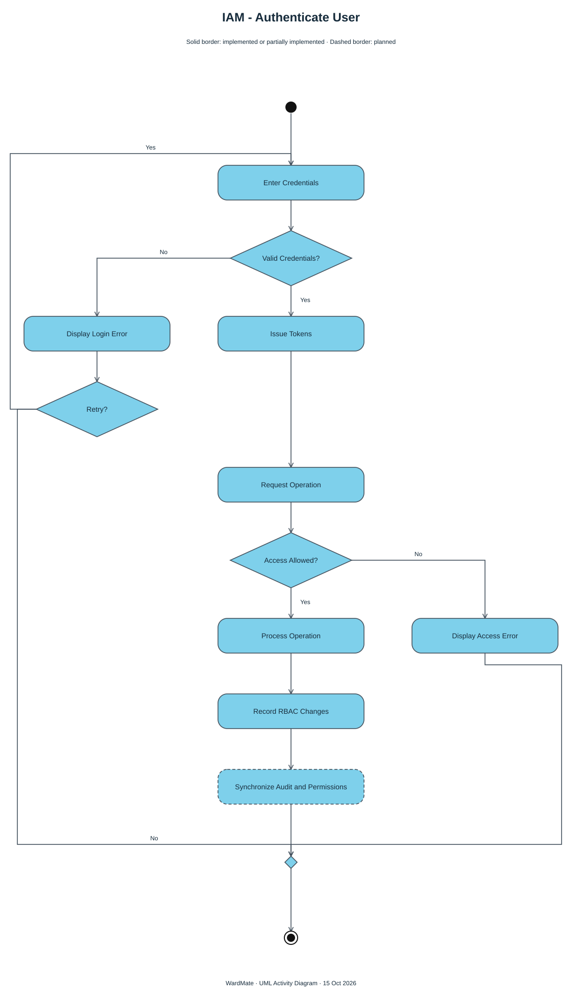
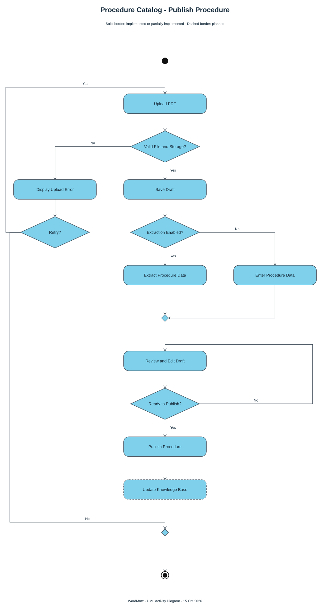
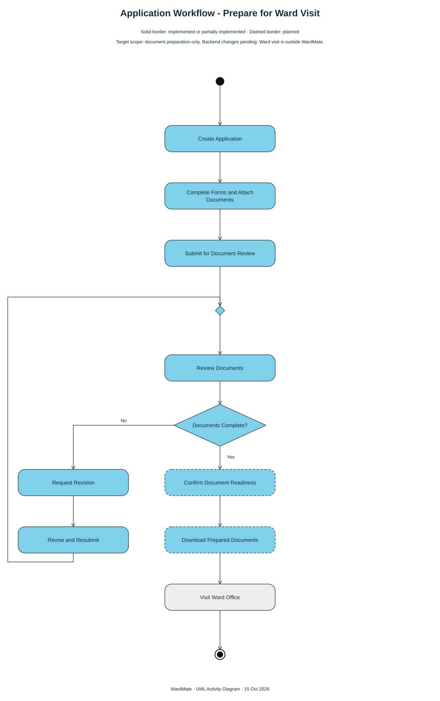
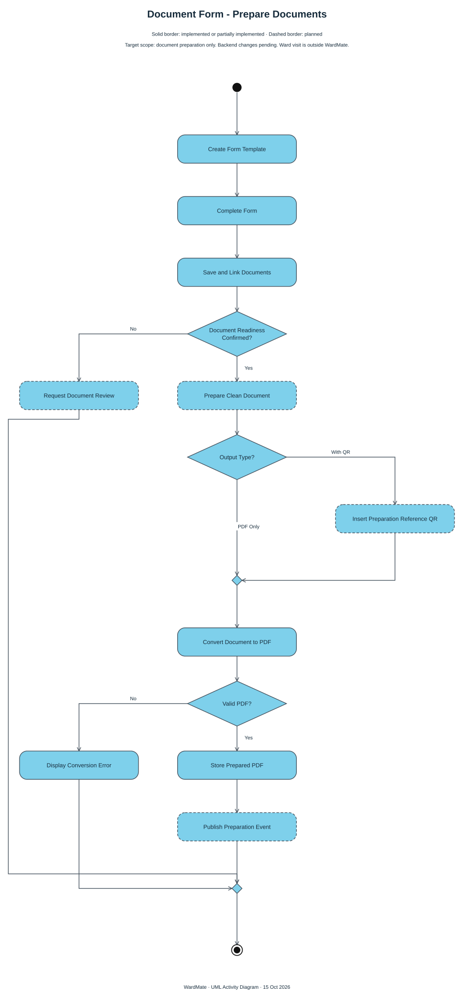
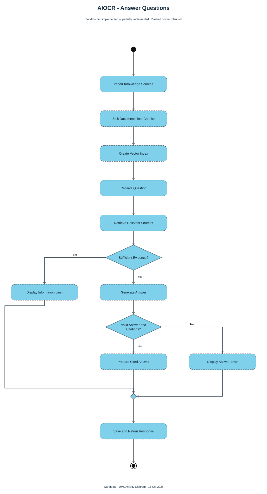
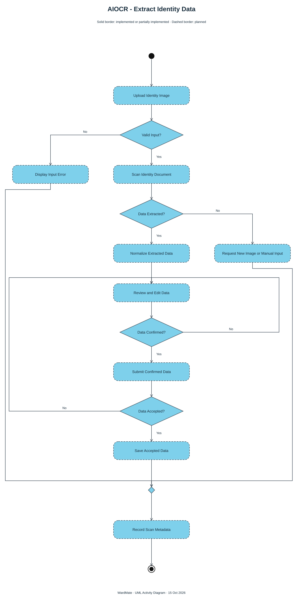
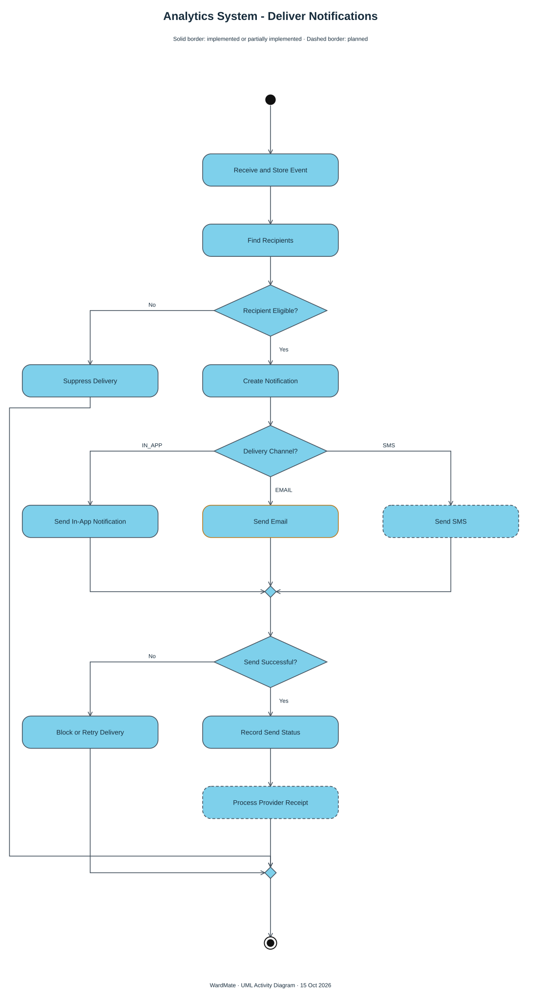
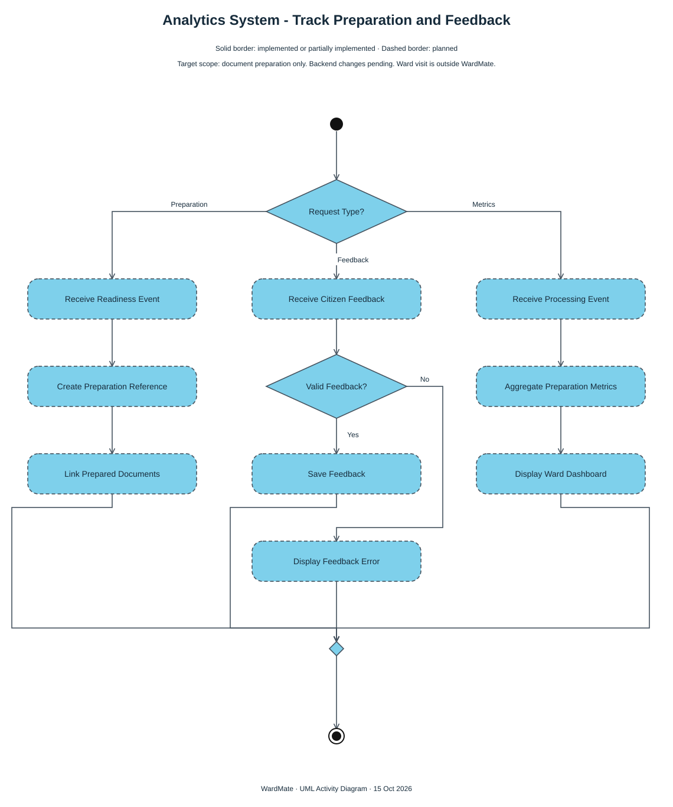
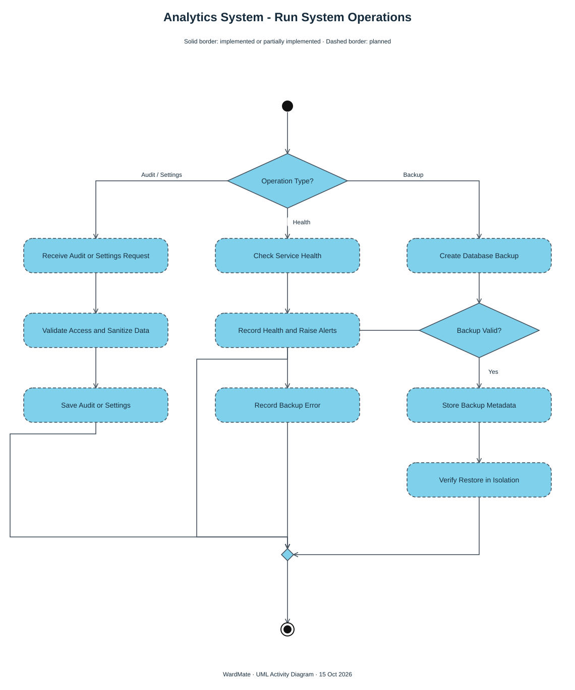

Concise English action labels. Black initial node, rounded blue actions, decision/merge diamonds, and a final node. Dashed actions are planned. Email integration remains partial. These diagrams describe target workflows, not a deployment verification. Pages 03, 04 and 08 follow the revised document-preparation scope; backend changes are pending. Visiting the ward office is outside WardMate.
Download editable draw.io file — 9 pages · Implementation notes
Works offline. Open an SVG to zoom, copy Mermaid source, or import the draw.io file to edit individual shapes.
Open SVGDownload PNGMermaid source








